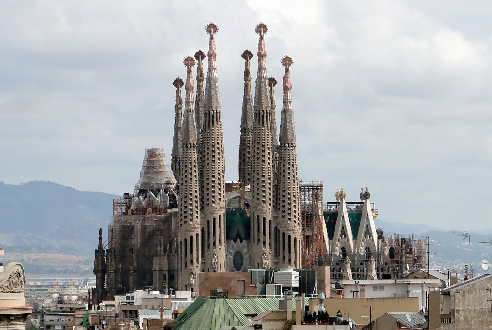

Paris

París (en francés Paris, pronunciado Acerca de este sonido [paʁi] (?·i)) es la capital de Francia y su ciudad más poblada. Capital de la región de Isla de Francia (o "Región Parisina"), constituye la única comuna unidepartamental del país. Está situada a ambos márgenes de un largo meandro del río Sena, en el centro de la cuenca parisina, entre la confluencia del río Marne y el Sena, aguas arriba, y el Oise y el Sena, aguas abajo.
La ciudad de París, dentro de sus estrechos límites administrativos, tiene una población de 2 273 305 habitantes en 2015.2 Sin embargo, en el siglo XX, el área metropolitana de París se expandió más allá de los límites del municipio de París, y es hoy en día, con una población de 12 405 426 habitantes en 2013, la segunda área metropolitana del continente europeo (después de Londres) y la 28ª del mundo.
La región de París es junto con la de Londres, uno de los núcleos económicos más importantes de Europa.6 Con 607 000 millones de euros (845 000 millones de dólares), produjo más de una cuarta parte del producto interior bruto (PIB) de Francia en 2011.7 La Défense es el principal barrio de negocios de Europa,8 alberga la sede social de casi la mitad de las grandes empresas francesas, así como la sede de veinte de las 100 más grandes del mundo.
Durante el siglo XIX y XX junto con la ciudad de Londres, 9París fue el centro de desarrollo de proyectos arquitectónicos dentro del marco de la Revolución Industrial y sus famosas exposiciones. Ejemplos de ello son: el Mercado de la Madeleine, en 1824; las Grandes Halles iniciadas en 1853 , las Galerie des Machines y la Torre Eiffel ambas realizadas en la exposición de París de 1889.
Es conocida también como la «Ciudad Luz» (la Ville lumière), es el destino turístico más popular del mundo, con más de 42 millones de visitantes extranjeros por año.10 Cuenta con muchos de los monumentos más famosos y admirados del orbe: la Torre Eiffel, la Catedral de Notre Dame, la avenida de los Campos Elíseos, el Arco de Triunfo, la Basílica del Sacré Cœur, el Palacio de Los Inválidos, el Panteón, el Arco de la Defensa, la Ópera Garnier o el barrio de Montmartre, entre otros. También alberga instituciones de reconocimiento mundial: el Louvre, el Museo de Orsay y el Museo Nacional de Historia Natural de Francia, así como un extenso sistema de educación superior de prestigio internacional. París ocupa un lugar importante en el ámbito de la cultura, la gastronomía, la moda y el lujo.